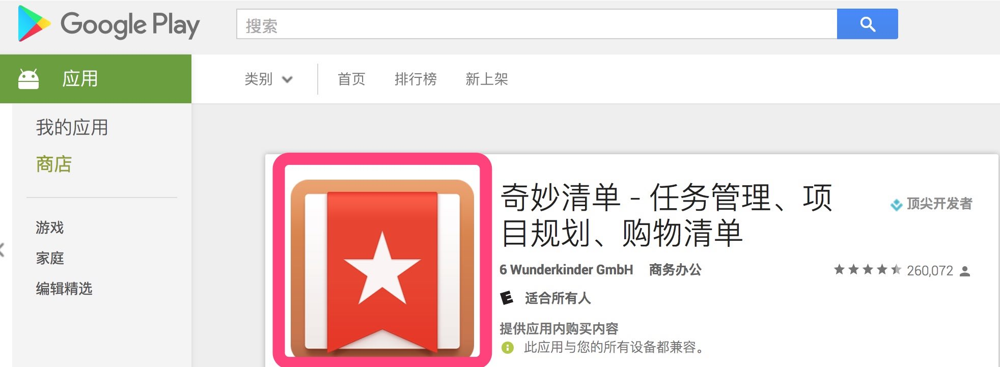
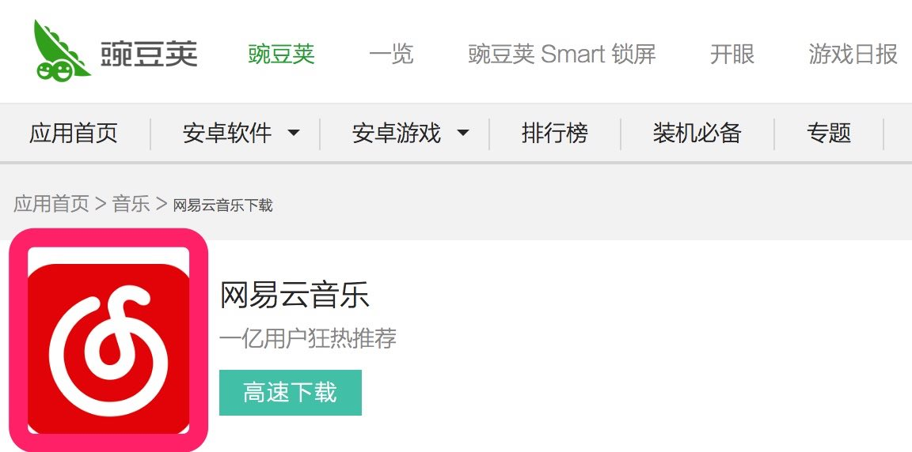
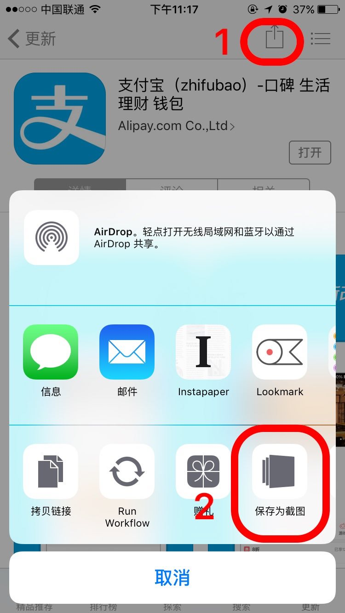
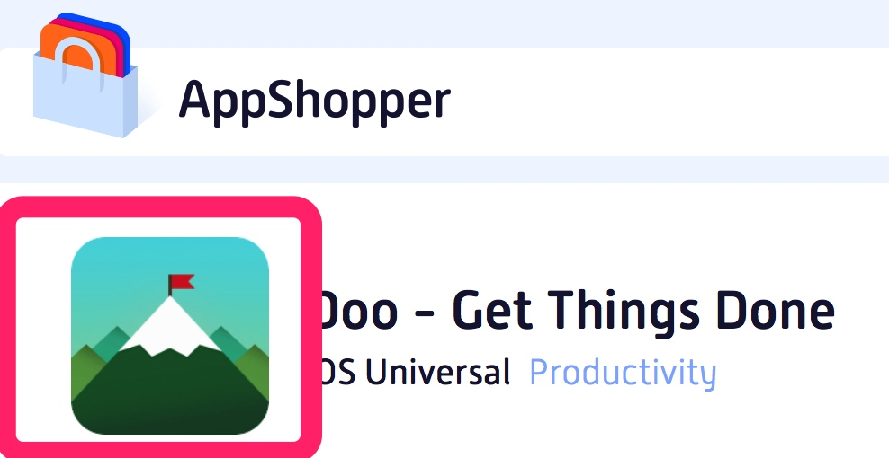

在写文章、做展示或者其他场景中，我们需要某些手机上的App图标来作为素材。网上有许多文章讲了图标的获取方法，在这里说几个我自己常用且获取快速方便的方法。
获取Android应用图标
相对于iOS应用图标，Android的应用图标获取比较简单：
- 通过Google Play获取：比如想获取Wunderlist这个App的图标，打开Google Play，搜索到Wunderlist的详情页，直接图标上右击保存图标即可。

- 如果你没有科学上网工具或者你要查找的App没有在Google Play中收录，那可以利用其它国内的安卓应用市场，以在豌豆荚获取网易云音乐的图标为例，同样是打开网易云音乐的详情页，直接图标上右击保存图标即可。

获取iOS应用图标
iOS应用的渠道比较独立，只有App Store一个，而在应用详情页上不能直接通过右键另存为的方法保存图标，但倒是可以通过查看网页源代码来找到图标文件，如果觉着麻烦可以看看下面的方法。
- 借助App Lightscreen（点击下载） 这款软件，在App Store的应用详情页上点击“分享”，再选择“保存为截图”，App的图标就乖乖地躺进相册里了。借助的这个小工具其实是一款截图管理软件，目前售价¥30，曾经冰点到¥18过。

- 上面的方法简单快捷，但如果没有购买 Lightscreen 可以通过AppShopper这个网站来获取。AppShopper网站是一个可以查看iOS、Mac应用的具体信息的网站，可以查看到App具体的升级、降价历史信息，可以在自己购买应用时做一个参考。在网站上找到应用详情页，然后在图标上直接右键另存为即可。

MORE
如果你想知道更多获取App图标的方法，可以看下少数派的这两篇文章：
提取 Android 高清应用图标？3 招就够
提取 Mac OS X / iOS 应用图标的 6 种技巧
推荐下其中提到的网站iTunes Artwork Finder
iTunes Artwork Finder可以提取电视节目、视频、电子书、专辑插图、应用程序、播客、电影等多达十项元素的大图标，还可以选择商店国籍，非常全能。
注意下，在此网站中提取到的App图标是方形的，而不是圆角矩形的。
如果你觉得这篇文章对你有所帮助，欢迎请我喝杯咖啡，感谢你的支持😁